From LoRa flood-monitoring hardware and ESP32 drones to projector mapping and speech recognition — a selection of projects where ideas became working engineering solutions.
Featured ProjectTeam ProjectIdea to Invention (I-to-I) 2025
2nd Place Winner — Idea to Invention 2025, UPAA–USA Innovation AwardView award →
FloodLink — Real-Time River Monitoring & Flood Prediction System
Role: Project Team Member · Department of Electrical & Electronic Engineering, UoP
A low-cost, LoRa-based, real-time river-monitoring and flood-prediction system built to give vulnerable communities earlier warnings — proudly winning 2nd Place at the Idea to Invention 2025 competition.
Sri Lanka faces recurring challenges with flash floods and seasonal droughts that often impact vulnerable communities and cost precious lives. FloodLink is a low-cost, LoRa-based, real-time river-monitoring and flood-prediction system designed to support early decision-making and improve community safety.
FloodLink uses waterproof ultrasonic sensor nodes connected through a long-range LoRa network, transmitting continuous river-level data to a central platform. Our machine-learning models predict the time to reach Alert, Minor or Major flood levels, enabling earlier evacuation and preparedness — and the system keeps working reliably even during internet outages, while also supporting drought monitoring.
Key Highlights
Real-time river-level monitoring
ML-based time-to-threshold flood prediction
Long-range, low-power LoRa communication
Telegram alerts + local siren warnings during emergencies
Hardware Design Lead · Custom ATmega328P circuit, programmed in Assembly · University of Peradeniya
A smart hydration-reminder device built completely from scratch around a custom ATmega328P circuit — no Arduino boards — and programmed entirely in Assembly language.
Introducing Bottle Mate — our 3rd-year Embedded Systems project designed to tackle a common, everyday problem: dehydration among busy office professionals. To solve this, our team engineered a smart hydration-reminder device.
Rather than taking the easy route, we built this completely from scratch — no Arduino boards were used. Instead, we designed a custom circuit centered around an ATmega328P microcontroller, and I had the privilege of leading the hardware design and bringing this custom circuitry to life.
The real challenge: per our course requirements, the entire system was programmed strictly in Assembly language. A weight sensor continuously monitors the water level in the bottle, the system calculates exactly how much you drank and dynamically adjusts the next hydration alert time, and all data is displayed on an I2C OLED screen — which we also successfully interfaced using pure Assembly. Incredibly proud of this hands-on engineering experience and the complex problem-solving it required.
Key Highlights
Custom ATmega328P circuit designed from scratch (no Arduino)
Entire firmware written in Assembly language
Weight sensor for continuous water-level monitoring
Hexacopter drone · ESP32 · Designed for EngEx 2025
A hexacopter drone we developed to monitor air quality, humidity and temperature in real time — a mobile, efficient and safe solution for environmental monitoring, especially in areas unsafe or inaccessible for humans.
SkyAQ is a hexacopter drone built around an ESP32 board, integrating a PM2.5 sensor, DHT22 sensor, GPS module and SD card reader for accurate environmental data collection.
It runs on a Li-Po battery, is controlled using DJI NAZA flight control, and features a Python-based GUI for real-time data visualisation. Designed for EngEx 2025, SkyAQ provides a mobile, efficient and safe way to monitor the environment where people cannot easily go.
An innovative attendance system powered by voice-recognition technology, built and tested as two parallel models — and successfully extended to Sinhala and Tamil inputs.
Our team developed an attendance system powered by voice recognition, building and testing two parallel systems — an MFCC (Mel-Frequency Cepstral Coefficients) based model and a GMM (Gaussian Mixture Model) based model.
Each speaker's voice was recorded using the phrase “The quick brown fox jumps over the lazy dog”, after which the system could identify individuals and automatically mark their attendance. It tested accurately across multiple sentences and was successfully extended to Sinhala and Tamil inputs, demonstrating real potential for speech recognition in education and beyond.
Speech RecognitionMFCCGMMVoice BiometricsPythonAttendance System
Project Gallery
MFCC & GMM voice-based attendance system
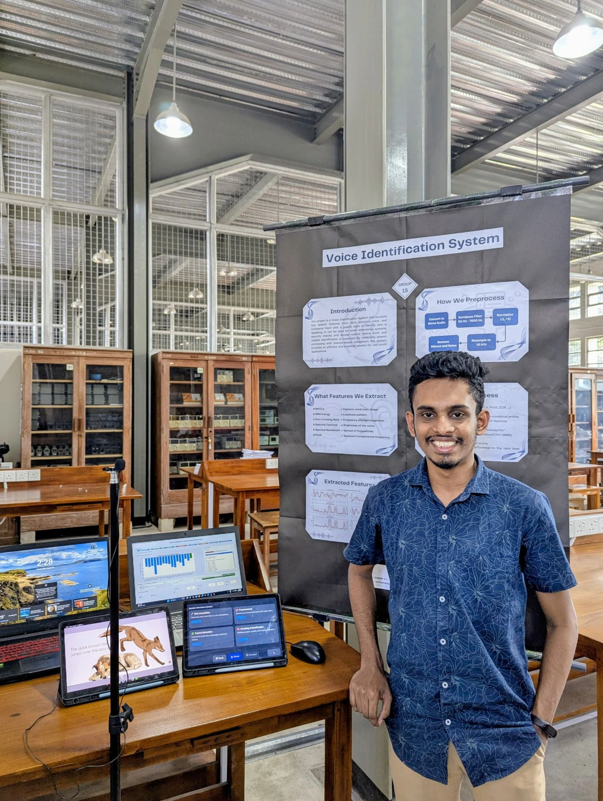
Speaker recording setup
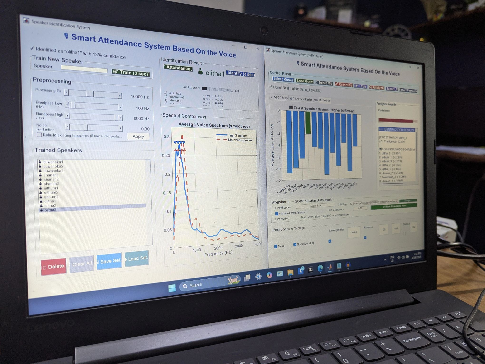
Voice-recognition workflow
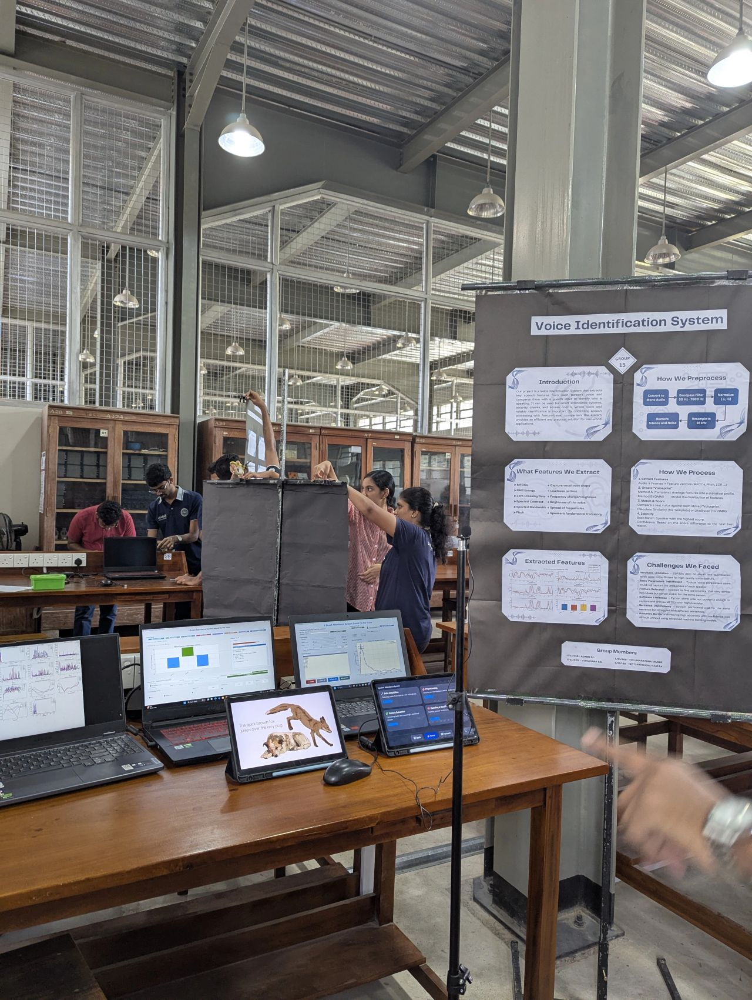
Automated attendance marking in action
Click any photo to view it full size.
Creative TechnologyResolume ArenaFirst at FoE UoP
First Projector Mapping at the Faculty of Engineering
Visual engineering · Resolume Arena · Faculty of Engineering, UoP
Proud to have carried out the first-ever projector mapping at the Faculty of Engineering, University of Peradeniya — where architecture and visuals blended seamlessly.
I carried out the first-ever projector mapping at the Faculty of Engineering, University of Peradeniya, using Resolume Arena. Watching the visuals blend seamlessly with the structure of the AR Building was a truly rewarding moment — a meeting of creative technology and visual engineering.
I also had the opportunity to guide the E24 batch, providing technical support and software training to help them map the projectors onto the structure themselves. Excited to keep exploring where creative technology and engineering intersect.
Projection MappingResolume ArenaCreative TechnologyVisual EngineeringMedia Production
Gallery
First projector mapping at the Faculty of Engineering
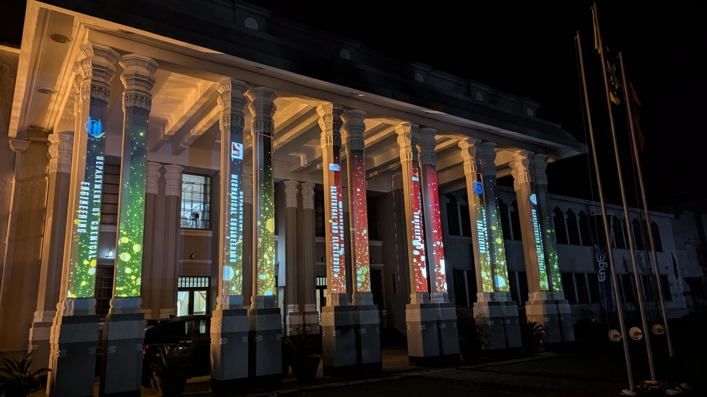
Visuals mapped onto the AR Building
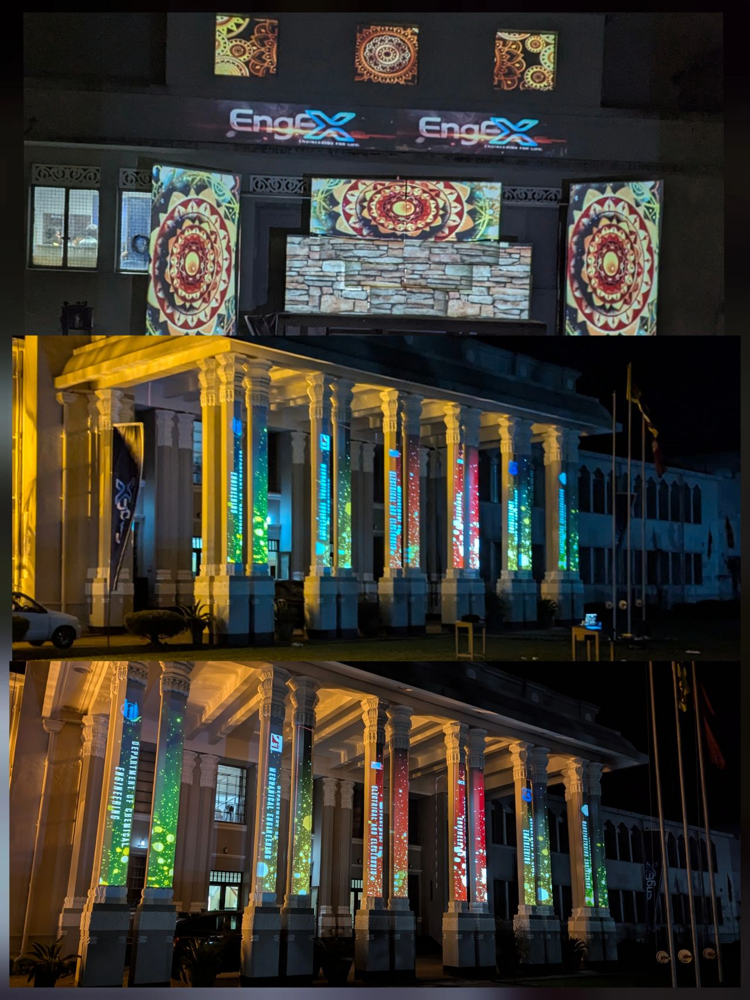
Resolume Arena projection setup
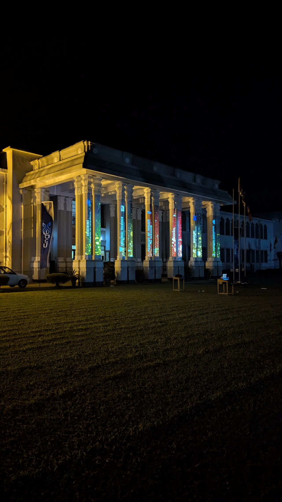
Architecture and visuals blending
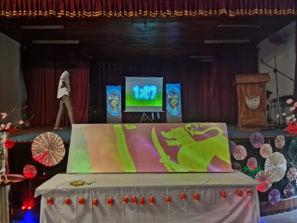
Guiding the E24 batch through the mapping
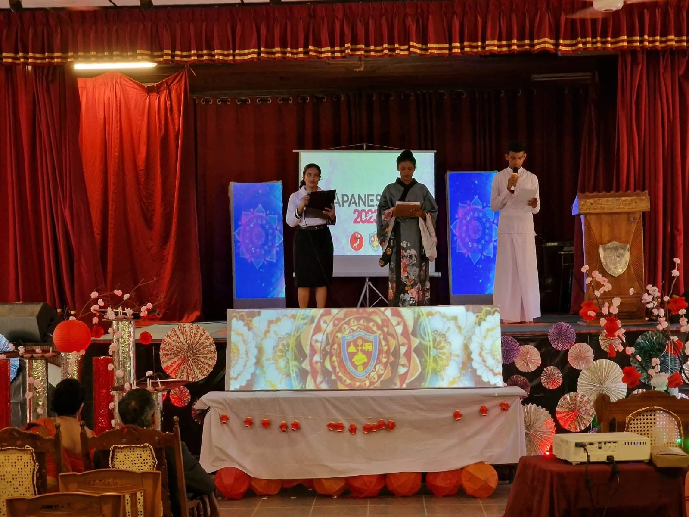
Seamless projection across the structure
Click any photo to view it full size.
Group ProjectLogic Gates · JK Flip-FlopsNo Microcontroller
Microcontroller-Free Line Following Robot
Group Project · Digital Electronics
A Line Following Robot designed and built entirely without a microcontroller — the whole control system runs on logic gates and JK flip-flops.
We designed and built a Line Following Robot without using any microcontrollers — the entire control system was developed using logic gates and JK flip-flops.
The robot achieved 100% successful line following with high accuracy and good speed on the track. Thanks to the JK flip-flop design, if it ever went off the line it could remember the direction and correct itself, returning smoothly to the track — a great example of how fundamental electronics can create intelligent behaviour without any programming.
RoboticsLogic GatesJK Flip-FlopEmbedded ElectronicsNo MicrocontrollerLine Following
Gallery
Microcontroller-free line following robot
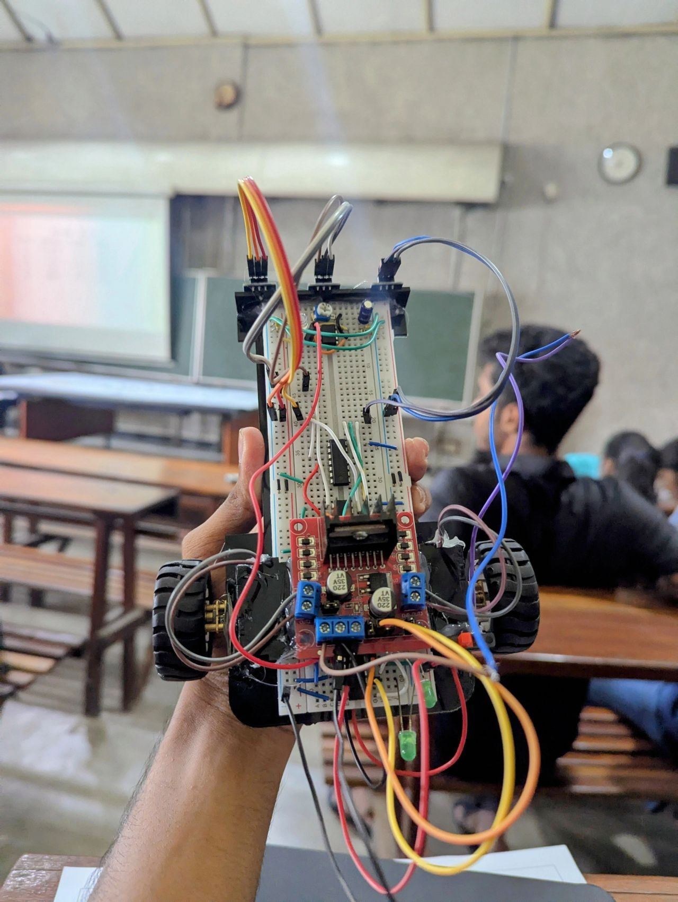
Logic-gate and JK flip-flop control circuit
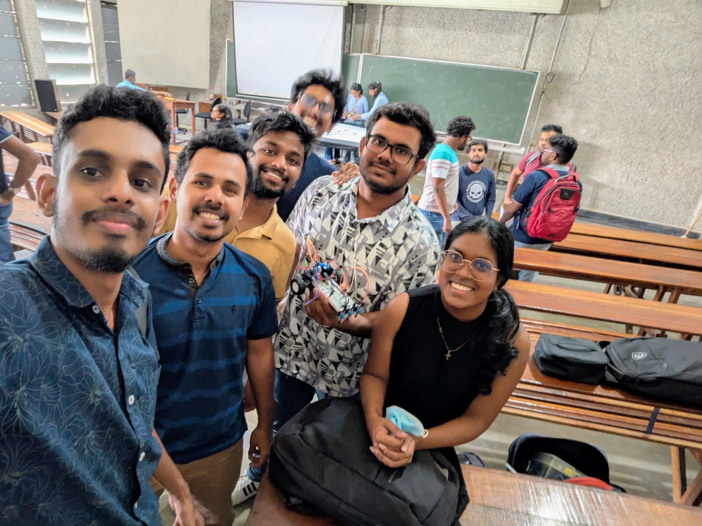
On the test track
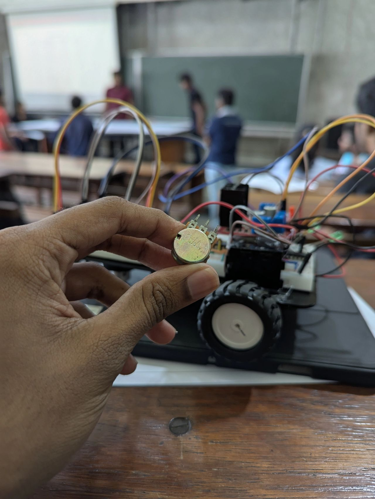
Smooth line following in action
Click any photo to view it full size.
Group ProjectSensor DesignCalibration
RPM-to-Voltage Sensor (RPM Meter)
Group Project · Sensor Systems
An RPM Meter — a sensor system that converts RPM (Revolutions Per Minute) values into corresponding voltage outputs, calibrated using a lathe machine.
We developed an RPM Meter — a sensor system that converts RPM (Revolutions Per Minute) values into corresponding voltage outputs.
For calibration we used a lathe machine, since it provides a known, stable RPM, and measured the corresponding voltage outputs. By graphing the results we established a clear relationship between the input RPM and the output voltage, validating the sensor's performance and deepening our understanding of sensor calibration.
Rock, Paper, Scissors, Lizard, Spock — Arduino + Python Game
Group Project · Hardware + Software
A Rock, Paper, Scissors, Lizard, Spock game built with Arduino and Python — combining hardware inputs with an interactive GUI.
We built a Rock, Paper, Scissors, Lizard, Spock game using Arduino and Python. The group designed both the hardware system and a GUI interface for the game.
The hardware lets players make selections using physical buttons, while the Python GUI displays player scores, choices, number of rounds and the computer's choice for a smooth, interactive experience. Players can use the physical buttons or simply click the on-screen GUI — this project combined hardware design, software development and creative thinking, and was great fun to bring together.
Rock, Paper, Scissors, Lizard, Spock — game GUI & hardware
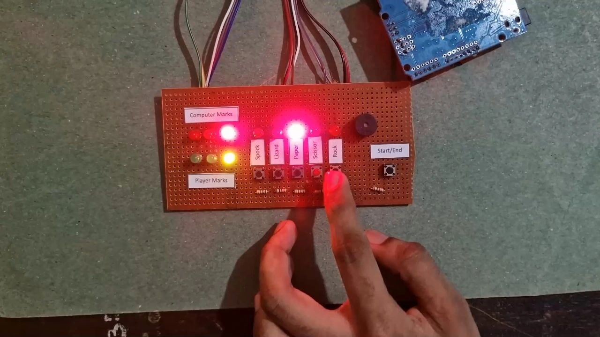
Physical button inputs with LED feedback
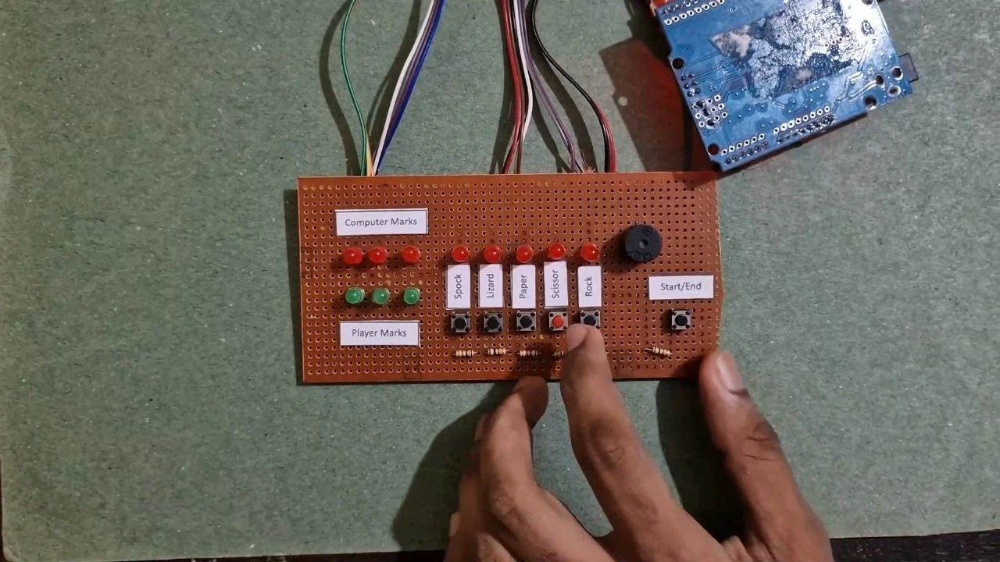
Custom-built Arduino control boardInteractive gameplay on screen
Click any photo to view it full size.
Ongoing ResearchMachine LearningHydrology
Machine Learning-Based Flood Prediction System for a Tropical River Basin
Ongoing research · Department of Electrical & Electronic Engineering, UoP
An ongoing research project developing an hourly rainfall–discharge flood forecasting model for a monsoon-influenced tropical river basin, using machine learning and extreme value analysis — aimed at connecting it to the FloodLink device.
Developing an hourly rainfall–discharge flood forecasting model across a multi-gauge tributary network in a monsoon-influenced catchment, using machine learning and extreme value analysis to derive empirical flood-severity thresholds from historical discharge data.
Our target is an advanced machine-learning algorithm that connects to the FloodLink device — essentially FloodLink 2.0 — turning real-time river-level data into accurate, actionable flood predictions.
Machine LearningFlood ForecastingRainfall–Discharge ModellingExtreme Value AnalysisHydrologyFloodLink 2.0